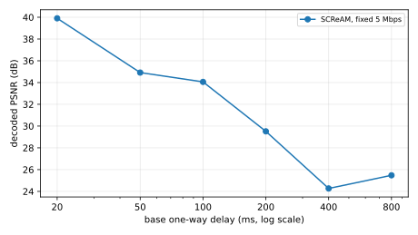
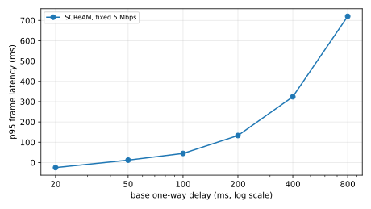

SCReAM is a delay-based congestion controller, so growing base path delay should be the stressor that breaks it first. On a fixed 5 Mbps link with no loss, as the one-way delay rises from 20 ms toward 800 ms, SCReAM's decoded picture quality should stay usable at low delay and then fall off past some delay, marking a degeneration boundary. If quality instead holds flat across the whole range, SCReAM tolerates delays up to 800 ms here and no boundary exists in this range.
SCReAM's delay-based control degenerates as base delay grows. On a fixed 5 Mbps link with no loss, decoded PSNR falls from 39.9 dB at 20 ms one-way delay to 34.9 dB (50 ms), 34.1 dB (100 ms), 29.5 dB (200 ms), and 24.3 dB at 400 ms, crossing the 25 dB usable floor between 200 and 400 ms. A degeneration boundary clearly exists inside the tested range.
Quality and delivery fall together at high delay. p95 frame latency climbs from tens of ms to 720 ms at 800 ms one-way delay (partly the added netem delay itself, partly queue buildup as the feedback loop slows), and frame delivery collapses: the viewer received only 229 of 600 frames at 800 ms versus about 587 at 20 ms. The 800 ms PSNR (25.5 dB) reads slightly above 400 ms only because so few frames survive to be scored.
The practical operating limit for this workload is roughly 200 ms one-way delay (about 400 ms RTT): below it SCReAM keeps video usable, beyond it quality and delivery drop off. This is the first of the three boundary axes; loss and jitter are next.
Limitations
Single arm. The testbed exposes only scream and gcc, no bare/no-CC sender, so the boundary is read off SCReAM's own quality-vs-delay curve rather than against a no-control baseline. A bare reference would sharpen it.
Recovery is off (nack/pli/fec false), matching H6-H8, so this isolates the controller and codec without retransmission. With recovery on the boundary could move.
One-way netem delay is swept {20, 50, 100, 200, 400, 800} ms; RTT is roughly twice that plus the wired base. The usable floor is set at 25 dB and a clear drop at 5 dB.
Workload-specific (realmotion-avi, 1280x1024 MJPEG, 10 fps, 60 s) and ceiling-specific (loose 4000 kbps). 3 reps per cell.
Absolute latency carries the aum/veda clock-skew artifact and the added netem delay itself; the boundary is read from decoded quality, not absolute latency.
Figures

Decoded PSNR vs base one-way delay (the RTT boundary). The degeneration point, if any, is the delay at which quality cliffs.

p95 frame latency vs base delay. Latency rises partly because the added netem delay is itself in the path; the absolute offset also carries the aum/veda clock-skew artifact.